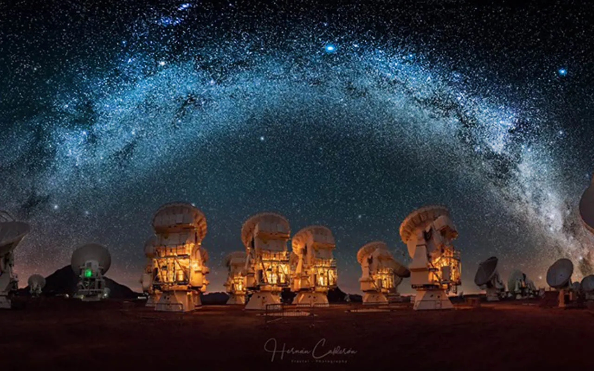

.
Image Display

A mirage of an astronomical object is a naturally occurring optical
phenomenon, in which light rays are bent to produce distorted or multiple
images of an astronomical object. The mirages might be observed for such
astronomical objects as the Sun, the Moon, the planets, bright stars and very
bright comets. The most commonly observed are sunset and sunrise mirages.

ALMA Observatory Located in Chile. Plain of Chajnantor that means
“Place of Beginning” or “The beginning” in Kunza language. This Astronomical
Observatory will open a totally new “window” to the Universe.
Allowing scientists to unravel important astronomical mysteries of
many years. Probe the very first stars and galaxies, and directly
capture exoplanets. Possibly discovering the first traces of life.
ALMA has 66 antennas. Fifty-four of 12 meters in diameter and twelve of 7 meters in diameter.
The radio telescope combines the signals from each one functioning as
an interferometer. With perfect parabolic shapes, of a precision equivalent
to only a fraction of the thickness of human hair. It makes them one of the most
accurate antennas in the world.